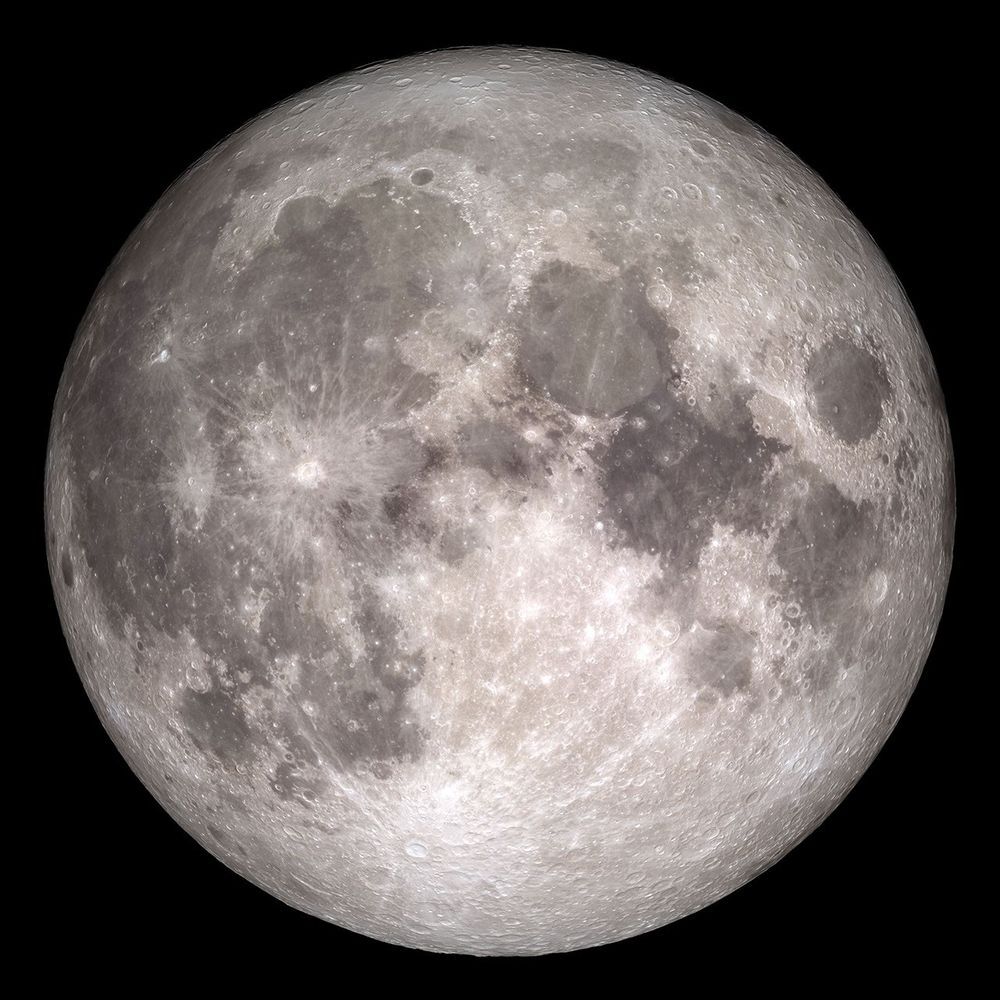
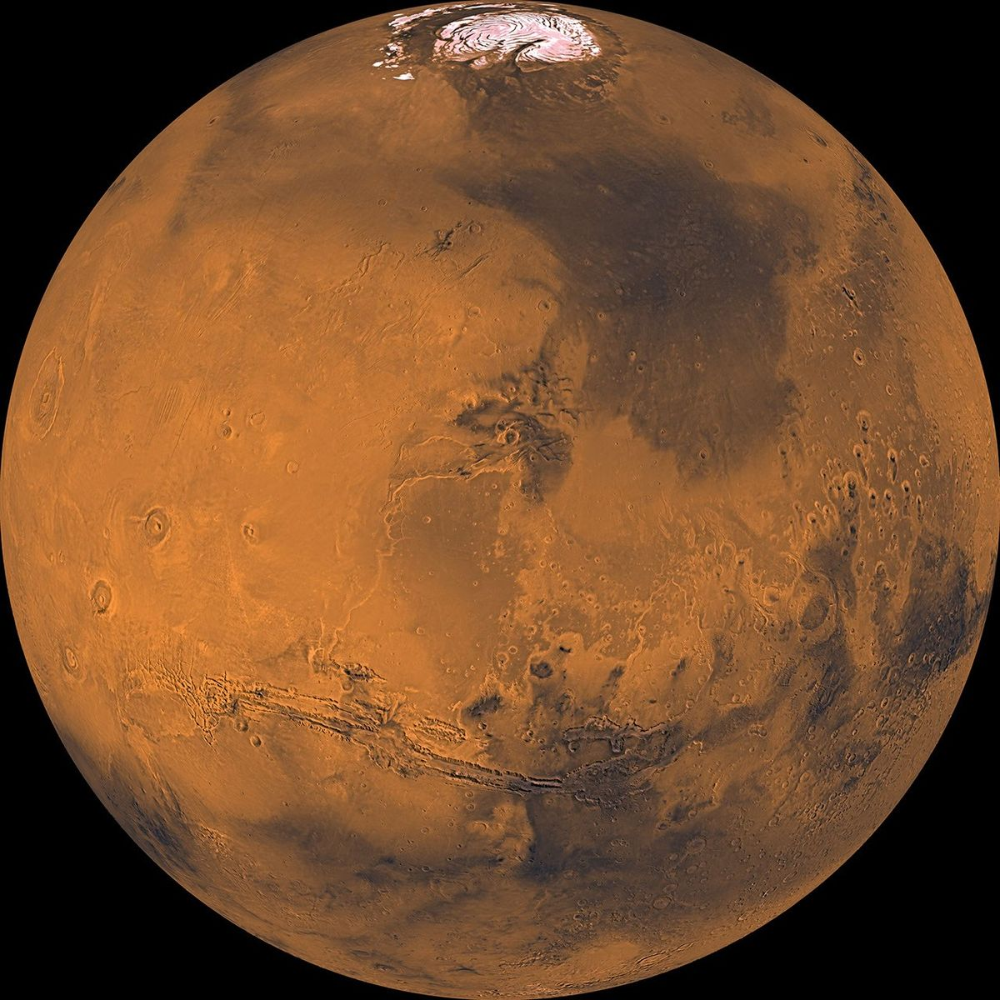

A LITTLE CURIOSITY. A BIG UNIVERSE.
Next stop.
The Moon.
Or maybe Mars.
Meet the missions. Explore a future outpost.
Discover what it takes to live on another world.
Made for curious minds, ages 8 and up. Grown-ups welcome.


START CURIOUS. ↗
LIFE BEYOND EARTH
A place to call outpost.
A future outpost would be a home, a laboratory and a workshop. Tap the map to see how its parts work together.
A possible future design. There are currently no inhabited outposts on the Moon or Mars. Real designs, locations and technology will evolve. Explore NASA’s lunar environment guide ↗
MANY TEAMS. ONE SHARED CURIOSITY.
Small steps.
Extraordinary missions.
From the first pictures to the next big plans, meet the people and robots helping us understand our neighbours.
A growing guide to major missions, with some programmes grouped together. “Launched” records a milestone, not a claim that a spacecraft is still working. Planned dates can change.
A QUICK CURIOSITY CHECK
Ready for your
next discovery?
No grades. No rush. Just five questions to get your space brain thinking.
YOUR EXPLORER’S NOTEBOOK
Keep your discoveries.
Save missions using the bookmark button. Your notebook stays in this browser, with no account needed.
Real science. Room to wonder.
Mission cards link to agency sources. Outpost diagrams are educational concepts. This site is independent of the agencies shown.